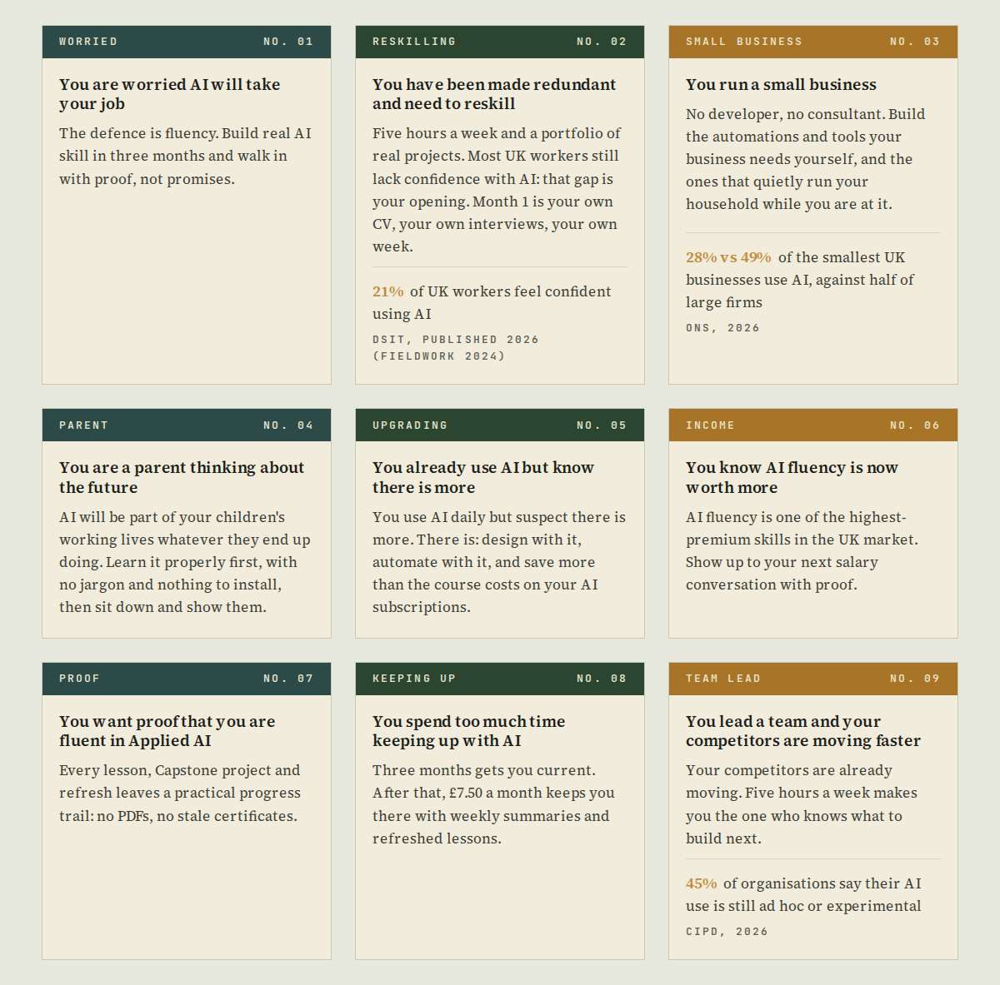
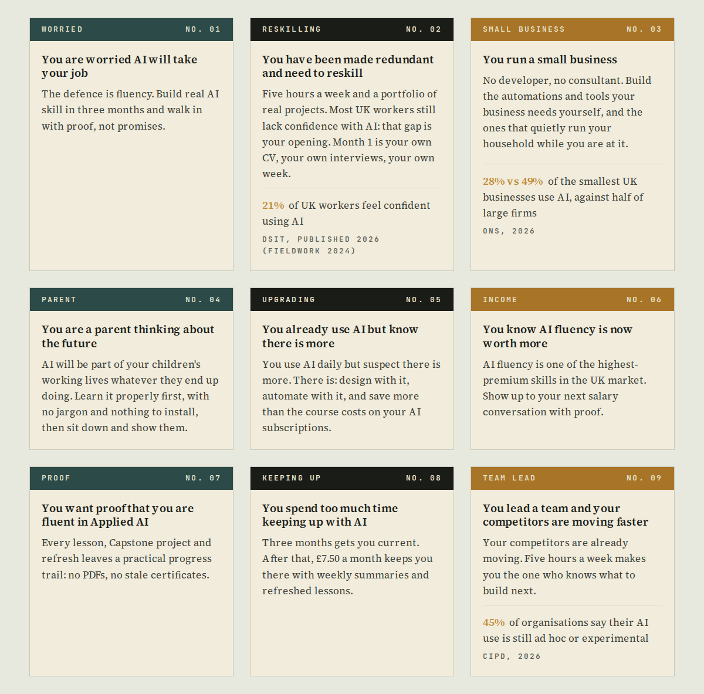
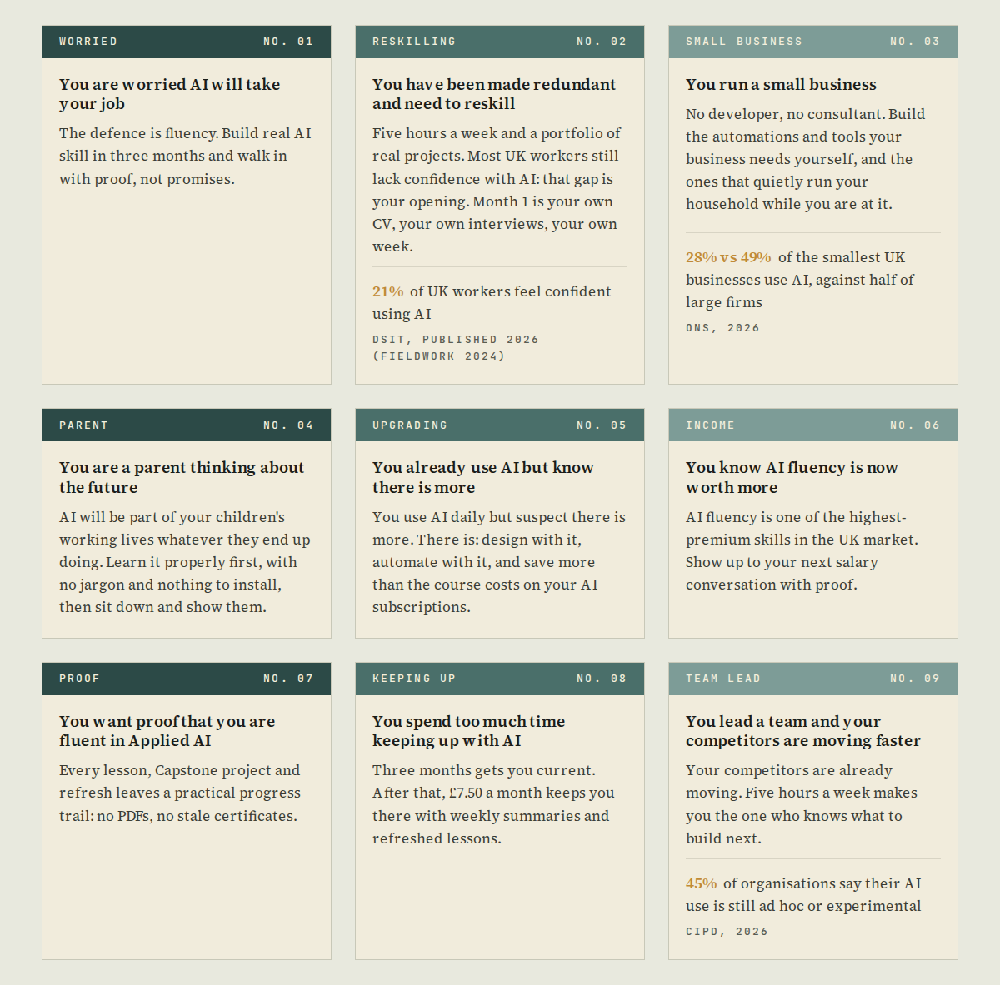
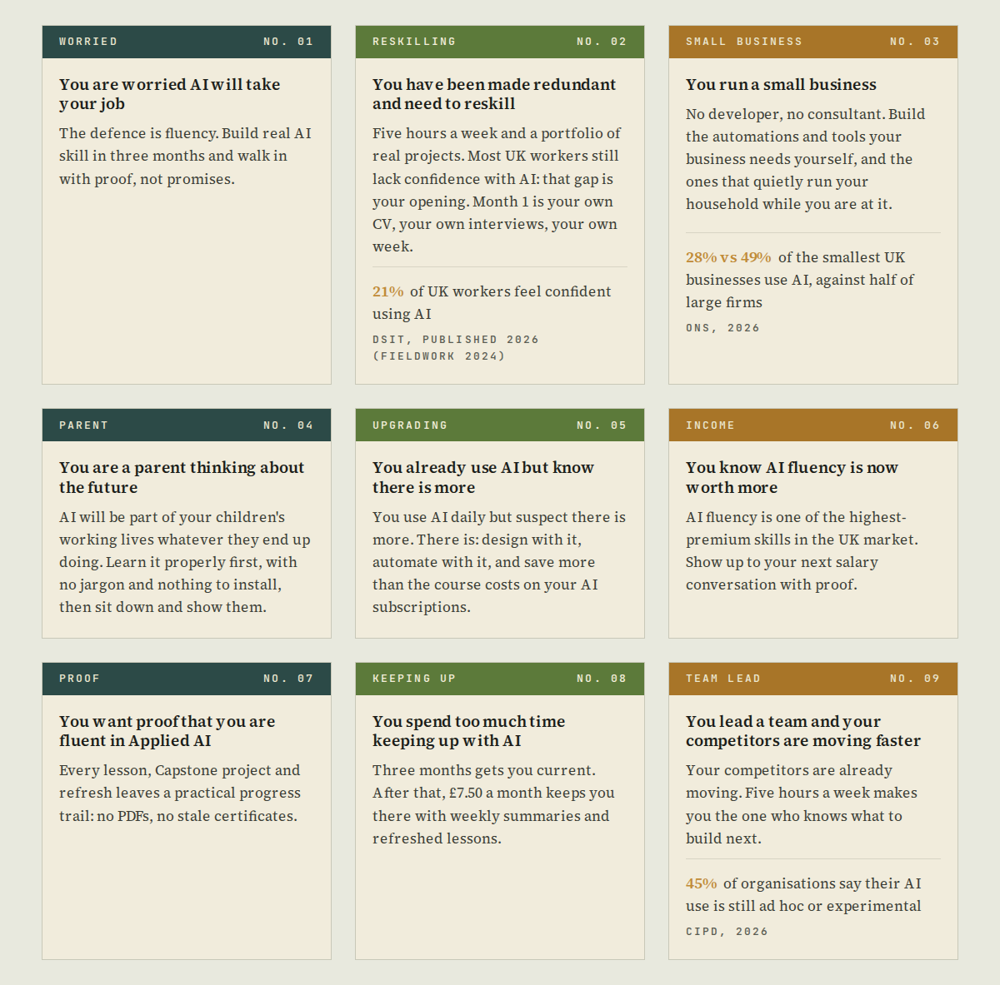

GWTH · design decision
You said to build the three palette options. Here they are on the real home page, plus the current version at the top so you are comparing like with like. Look at the tops of cards 01 and 02 in each: in the current one they are two different colours that read as the same colour. Tell me the letter and I will make it the palette; nothing here is applied to the site yet.
Teal, moss, rust. Cards 01 and 02 are both dark green and read as one colour at a glance, which is the finding.

Teal, ink, rust: three colours already in the palette, nothing new. The middle card goes to the page's own near-black, which is the largest possible separation from the other two and survives any projector. Ochre was the obvious candidate for the middle card and is not offered: it is the same family as the rust on card 03, so it would swap one pair of look-alikes for another.

Teal at full, three-quarter and half strength. Colour stops pretending to be a code and becomes rhythm instead: nothing to decode, and it cannot go wrong on a projector. Quietest of the three.

Teal stays, the second green moves to a lighter warmer olive, rust stays. Keeps the idea that each month has its own colour, and puts real distance between the two greens.
